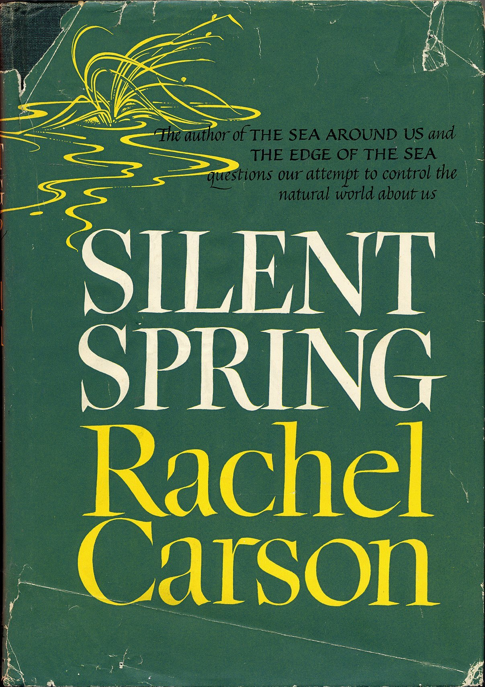

Contexto e Introdução
O que é o Estado Moderno?
Em que plano, dimensão, domínio ou esfera da realidade o Estado moderno existe?
Distinção tripartite da realidade
Karl Popper propôs uma distinção tripartite da realidade em sua teoria dos “três mundos”, apresentada inicialmente em sua obra Objective Knowledge: An Evolutionary Approach (1972). Nessa estrutura ontológica:
- o Mundo 1 corresponde ao mundo físico, dos objetos materiais e eventos naturais;
- o Mundo 2 refere-se ao mundo subjetivo da consciência, como pensamentos, emoções e experiências individuais;
- e o Mundo 3 diz respeito ao universo das ideias e das criaçãos, dos conteúdos objetivos do pensamento, como teorias científicas, argumentos, obras de arte e instituições sociais.
 Karl Popper (1902–1994)
Karl Popper (1902–1994)
Para Popper, embora o Mundo 3 tenha origem na mente humana, ele possui uma existência autônoma e pode exercer influência causal sobre os outros mundos, sobretudo o Mundo 2. Essa divisão teve grande impacto na filosofia da ciência e da mente, ao oferecer uma maneira de pensar sobre a realidade que inclui tanto aspectos físicos quanto sociais e simbólicos.
Yuval Noah Harari (1976–), em Sapiens: Uma Breve História da Humanidade, e mais recentemente, mas não apenas, em Nexus: Uma breve história das redes de informação, da Idade da Pedra à inteligência artificial, destaca uma distinção marcante entre três tipos de realidade: objetiva (fatos físicos), subjetiva (experiências individuais) e intersubjetiva (construções coletivas, como mitos, leis e instituições).
A ideia de realidade intersubjetiva não é um pioneirismo de Harari — embora ele a popularize de forma muito acessível e impactante em Sapiens. O conceito tem raízes profundas na filosofia, sociologia e fenomenologia, bem anteriores a Harari.
Edmund Husserl (1859–1938), fundador da fenomenologia, já tratava da intersubjetividade como condição para a constituição do mundo social.
Alfred Schutz, influenciado por Husserl, desenvolveu o conceito de realidade intersubjetiva como “mundo da vida” compartilhado, base das interações sociais.
Peter Berger e Thomas Luckmann, em A Construção Social da Realidade (1966), consolidam a noção de realidade intersubjetiva como o universo onde significados são socialmente produzidos, transmitidos e mantidos. - A realidade social é algo que não é dada, mas construída por meio da interação humana. - Essa construção acontece em três etapas principais: - Externalização: os seres humanos criam instituições e práticas sociais; - Objetivação: essas criações ganham autonomia e passam a parecer “naturais”, como se sempre tivessem existido; - Internalização: os indivíduos, ao nascerem em uma sociedade, absorvem essas estruturas como parte da realidade. - Os humanos se destacam pela sua capacidade de construir a realidade social.
A originalidade da abordagem de Harari está em mostrar como a realidade intersubjetiva se tornou o principal campo de atuação das sociedades humanas, sustentando estruturas complexas exclusivamente por meio de crenças compartilhadas que se consolidam e operam em amplas redes de informações.
- Realidade objetiva
- Existe independentemente da consciência humana;
- Mesmo que ninguém acredite nelas, ainda existem;
- Exemplo 1: montanhas, átomos, gravidade;
- Exemplo 2: Uma pizza tem em média 1500 a 2500 calorias.

- Realidade subjetiva
- Existe apenas na mente individual;
- Só a pessoa que sente ou acredita acessa diretamente;
- Exemplo 1: dor, prazer, emoções, crenças pessoais;
- Exemplo 2: Quem prepara a pizza mais gostosa?
- Realidade intersubjetiva
- Existe entre mentes, sustentada coletivamente por um grupo de pessoas, ou em outras palavras, em redes de informações;
- Exemplo 1: Dinheiro, Leis, Religião
- Exemplo 2: Em 2010, Laszlo comprou duas pizzas por 10 mil Bitcoins (BTC). Esta foi a primeira transação comercial conhecida envolvendo BTC. Quanto vale um BTC?
Quanto vale uma pizza? 
Todos entendemos a existência dos EUA, da China, Rússia e Brasil como uma realidade objetiva, mas há casos, em que as pessoas divergem sobre a existência de certos Estados.
Dinheiro, Leis, Religião, Estado e Nação pertencem à realidade intersubjetiva; têm enorme poder dentro de uma rede informacional específica e não tem nenhum sentido fora dela.
Em Nexus, Harari destaca o livro e o prelo (imprensa tipográfica) como os primeiros instrumentos das tecnologias da informação, atuando como veículos fundamentais para a construção e disseminação de redes intersubjetivas de conhecimento e crença.

Tabuleta, pergaminho, códice |

Prensa tipográfica |
O poder das estórias
Kendall Haven (1976-) 
Story Proof: The Science Behind the Startling Power of Story, 2007
“A mente humana se baseia em estórias e na arquitetura da estória como mapa primário para o entendimento, encontrando sentido, lembrando e planejando nossa vida. A vida é como as estórias por pensamos em termos de estórias.”
Gênese do Pensamento em Justiça e Direito Ambiental
O antropocentrismo estabelece uma separação artificial entre o ser humano e a natureza, posicionando a humanidade em oposição às demais espécies do planeta e assumindo o ser humano como medida autorreferente de todas as coisas (Teixeira 2013).
Steve Cutts, 2012. Man
Rachel Carson (1933-2012)
Rachel Carson foi uma cientista, bióloga marinha, escritora e ecologista norte-americana. Por meio da publicação de Silent Spring (1962), além de diversos artigos e obras voltadas ao meio ambiente, desempenhou um papel fundamental no surgimento da consciência ambiental moderna.
Silent Spring, 1962

Alerta sobre os impactos negativos do uso de pesticidas, e o surgimento de movimentos ambientais
- Título simbólico:
- A “primavera silenciosa” é uma metáfora para um futuro em que os pássaros não cantam mais, porque foram envenenados pelos pesticidas — um alerta poético e trágico sobre o rumo que a humanidade está tomando.
- Uso de pesticidas:
- Carson mostra como substâncias químicas (como o DDT) são pulverizadas sem critério, afetando plantas, animais, solos, águas e seres humanos, acumulando-se na cadeia alimentar.
- Impactos na fauna:
- Pássaros, peixes e insetos polinizadores morrem ou sofrem mutações. Ela destaca especialmente os efeitos sobre as aves, cujas populações estão em declínio por conta da toxicidade dos pesticidas.
- Ciência vs. Indústria Química:
- Carson denuncia a omissão e manipulação das informações pelas grandes corporações químicas, que minimizam os riscos dos produtos e desconsideram a saúde pública e ambiental.
- Chamado à ação:
- Ela propõe uma ciência mais ética e responsável, o controle racional dos pragas com alternativas menos danosas e a necessidade de envolver o público nas decisões sobre o meio ambiente.
John Rawls (1921-2002)
Rawls é uma das figuras mais importantes ao discutir a justiça social dentro do direito. Em sua obra “Uma Teoria da Justiça”, ele desenvolve o conceito de justiça distributiva, onde as desigualdades sociais e econômicas só podem ser justificadas se beneficiam os mais desvantajosos (o princípio da diferença).
véu da ignorância
Uma Teoria da Justiça, 1971

Ronald Dworkin (1931-2013)
A teoria do direito de Dworkin sustenta que argumentos jurídicos adequados repousam na melhor interpretação moral possível das práticas em vigor em uma determinada comunidade. A essa teoria de argumentação jurídica agrega-se uma teoria de justiça, segundo a qual todos os juízos a respeito de direitos e políticas públicas devem basear-se na idéia de que todos os membros de uma comunidade são iguais enquanto seres humanos, independentemente das suas condições sociais e econômicas, ou de suas crenças e estilos de vida, e devem ser tratados, em todos os aspectos relevantes para seu desenvolvimento humano, com igual consideração e respeito.
Elabora a ideia do juiz hércules
Levando os Direitos a Sério, 1977
Hans Jonas (1903-1993) 
A relação entre o conceito de responsabilidade e desenvolvimento sustentável.
The Imperative of Responsibility: In Search of an Ethics for the Technological Age, publicada em alemão em 1979; inglês em 1984.

Elinor Ostrom (1933-2012)
A Tragédia dos Comuns
Para discutir os bens comuns e como a gestão comunitária pode ser fundamental na preservação de espécies e ambientes ameaçados.
Governing the Commons: The Evolution of Institutions for Collective Action, 1990; Nobel em 2009.